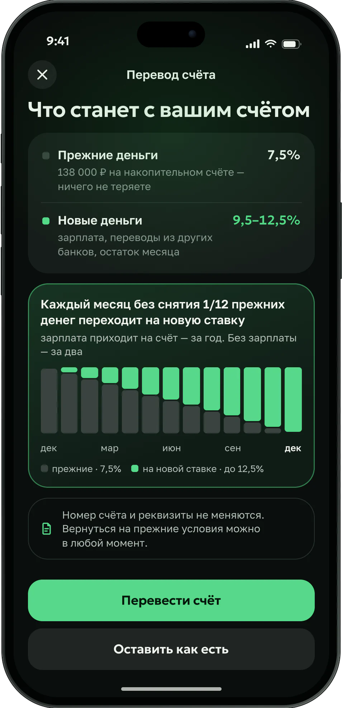
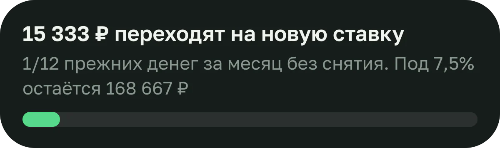

Переезд: прежние деньги ничего не теряют
Нынешний клиент видит до подключения, что станет с его счётом: прежние деньги остаются на 7,5%, новые получают сетку.
Каждый месяц без снятия 1/12 прежних денег переходит на новую ставку.
Что станет с вашим счётом

31 декабря: итоги месяца

Переход на новую ставку
